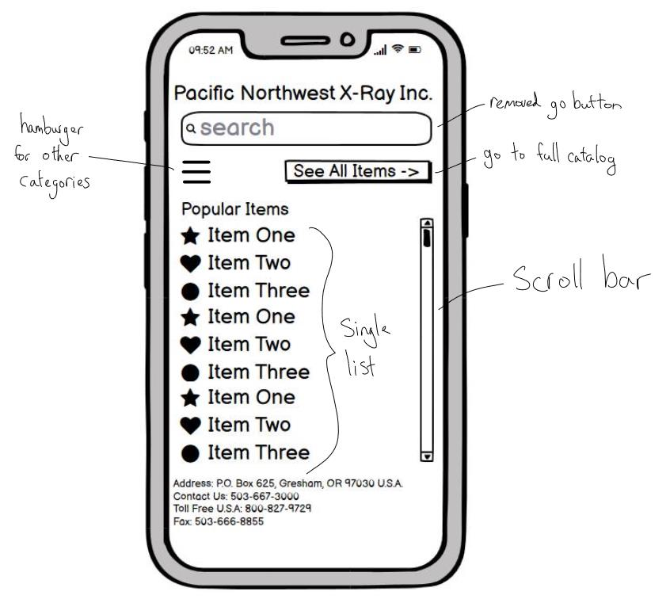

For this assignment, I was tasked with finding a poorly designed website
and improving on it. The first section of this page explains how I chose
a webpage and identified its problems. The second section details how I
planned out my redesign using both lo-fi and hi-fi prototypes. Finally,
the last section shows the redesigned website.
1) Identifying Usability Problems
Picking a Web Page
There are millions of websites floating around in the internet. Some
sites are well built and stand the test of time, while others play host
to numerous design and accessibility flaws. In my exploration of
potential sites that could benefit from a redesign, I came across many
candidates. To name a few, there is the
ACME Laboratories
website,
Paul Graham's
personal website, a site for Channing Tatum's picture book,
The One and Only Sparkella, and this site for
Empire's Metal Products. In the end, I decided on redesigning
Pacific Northwest X-Ray Inc.'s official website. Below is an image of their homepage:
Finding Problems
I evaluated the page and identified the following problems:
There is no "see all items" button, so there is no way to find the
full catalog.
There are no item categories to choose to browse by.
The search bar has no recommendations as you type.
The "no printed catalog is available" line at the bottom of the page
looks like a link but isn't.
There is no description of the company on the main page or "about
us" button.
For the popular items, it doesn't tell you the total units sold or
average sales.
There is no hierarchy for the popular items. Is the first item in
the second column the second most popular, or the ninth?
The item names are intended for advanced users and don't use simple
terms.
The items don't have relevant pictures, they all use the same icon.
The item names are inconsistent. Some items have descriptors in the
name like "fastest shipping" and "best comfort" while others don't.
Accessibility
Using WAVE, I identified the following accessibility issues:
The page has very low contrast. The text is hard to read (black on
dark blue).
All of the skull icons for the items do not have alt text.
The search bar does not have a label.
The language of the page is not identified.
The page has no heading structure and no page regions.
2) Visual Redesign
Low-fidelity Wireframing
I started by making lo-fi prototypes for the redesign:

Visual Design Style Guide
Next, I designed a style guide for hi-fi prototyping: